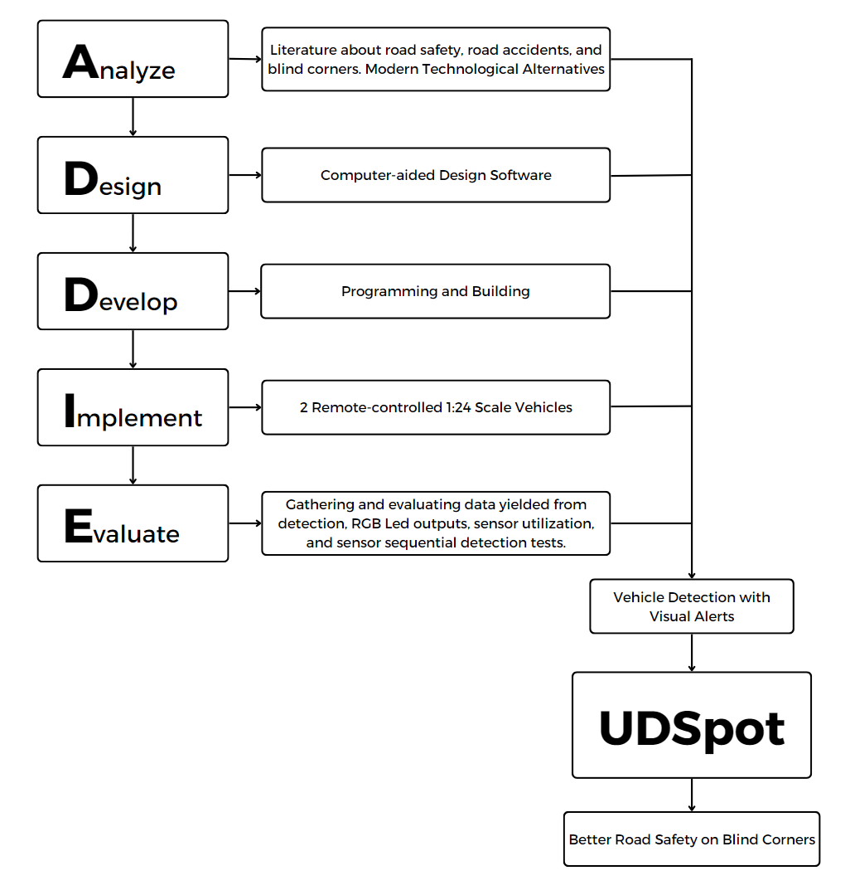
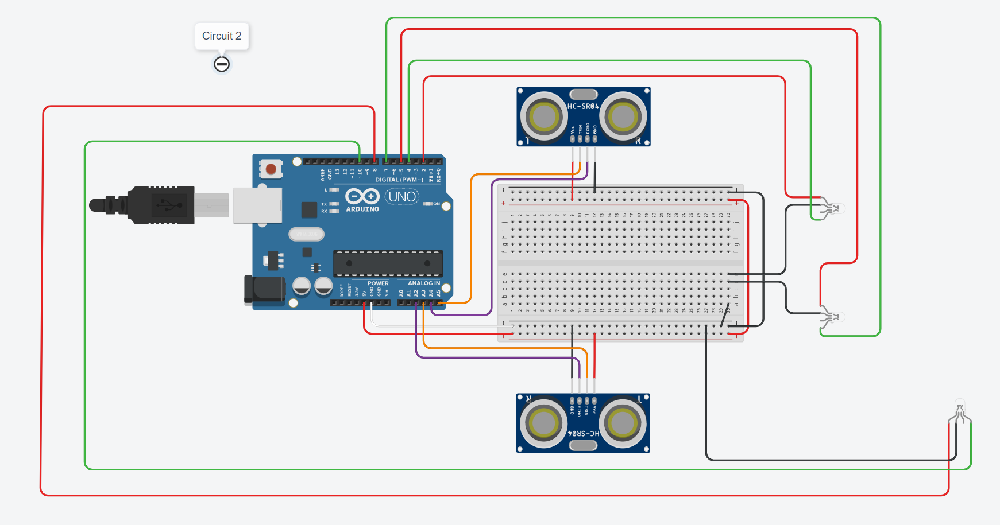
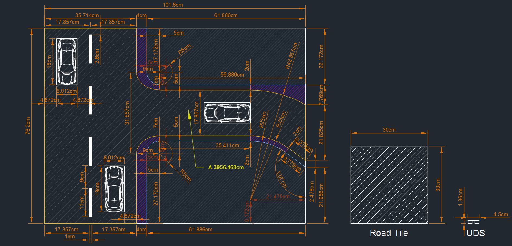
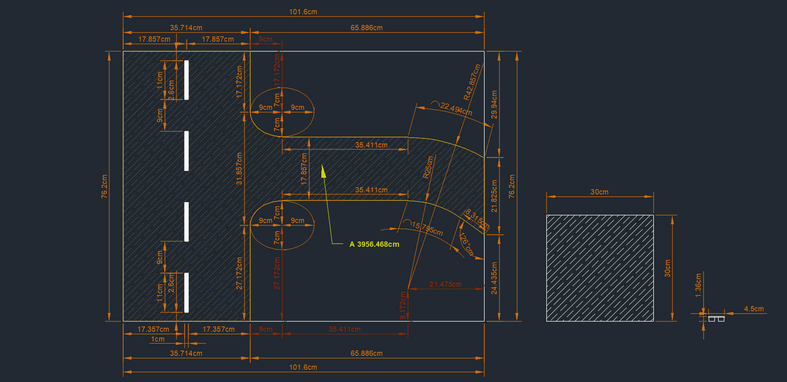
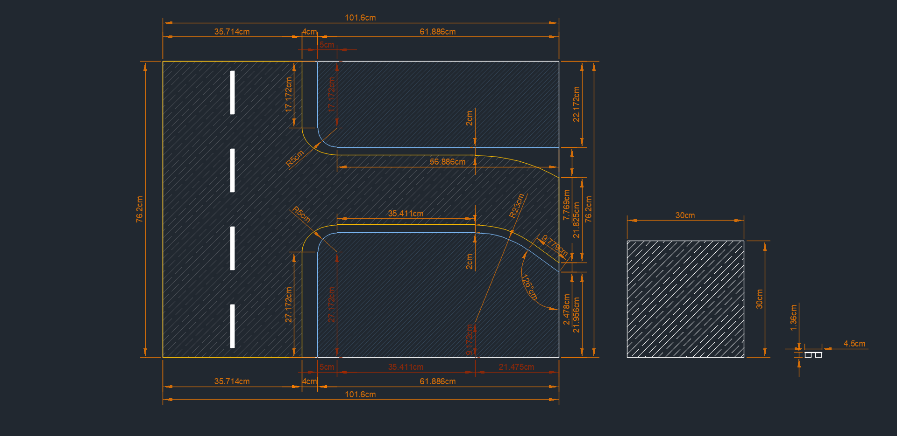
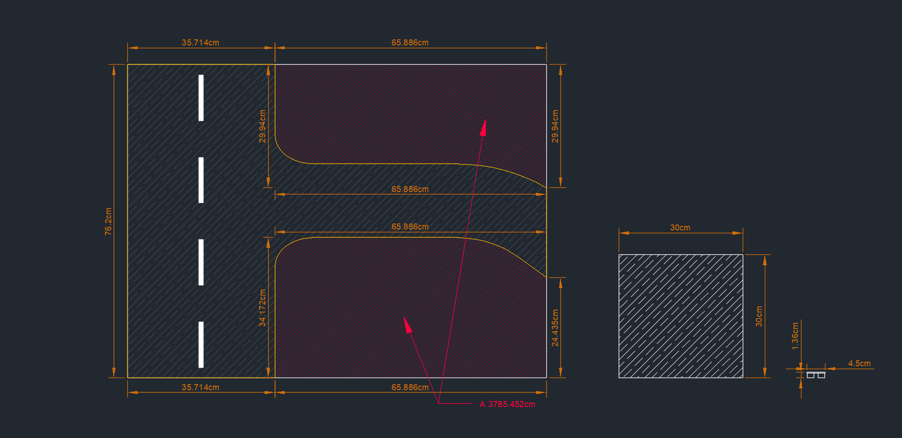
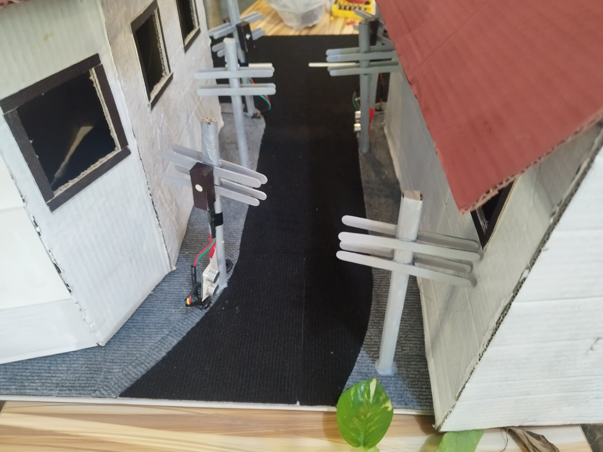

Methodology
A quantitative research design based on prototyping, executed through the five phases of the ADDIE model — Analysis, Design, Development, Implementation, and Evaluation — producing a working, scaled-down model of UDSpot on a diorama.
Quantitative design, prototyping approach
A Quantitative Research Design, as defined by Creswell (1994), is an inquiry into a social or human problem based on testing a theory composed of variables, measured with numbers, and analyzed with statistical procedures — in order to determine whether the predictive generalizations of the theory hold true. A prototype, on the other hand, is an early sample, model, or release of a product built to test a concept or process (Volchko, 2017).
The prototyping procedure employs the ADDIE model, which combines the design, developmental, and evaluation phases into one iterative loop. The idea: produce and present a sample working model, scaled down in a diorama that visualizes the road.


The five phases, in practice
Analysis
The researchers gathered and analyzed existing literature on road safety, road accidents, blind corners, and existing blind-corner systems. They also immersed themselves in real blind corners on small streets along Anabu I and Bayan Luma 3 in Imus City, Cavite. The gap identified: a solution using electronic sensors — UDS for detection, color-coded LEDs for visual aid, and Arduino as the software and hardware base of the system.
Design
Using personal laptops, the researchers prototyped the circuits virtually on Tinkercad (Circuit 1 and Circuit 2), including the C++ code, before building in real life. In parallel, the diorama was drawn in AutoCAD — exact measurements for road, infrastructure, and lots, ensuring accurate scaling (1:28 roads, 1:24 cars) before any material was cut.
Develop
Set up the Arduino IDE on the team's laptops, procured the hardware (Arduino UNO R3, UDS, RGB LEDs, wires, resistors), meticulously constructed the circuitry, and developed the C++ code — troubleshooting with the help of Mr. Seth Andrei Plata, a Grade 12 ABM student with programming expertise. Simultaneously, the diorama was handcrafted from carpets, illustration boards, plywood, and painted structures.
Implement
Tested the functionality and consistency of the UDS detection system by implementing two remote-controlled 1:24-scale vehicles into the diorama with the UDSpot system. Multiple tests identified which areas of the prototype needed further improvements.
Evaluate
Gathered data on detection accuracy, RGB LED color output, and the correct functions of scenario-specific UDS. Four parameters were measured: consistent detection, correct LED colors, correct sensor utilization per scenario, and correct sequential functioning. A chi-square test determined whether UDSpot significantly reduced vehicle standoff on blind corners.
Research materials
Everything that went into the prototype, as documented in the paper:
4 × Ultrasonic Distance Sensors
The main detection tool — sends and receives ultrasound waves to measure object distance.
Arduino UNO R3
The microcontroller board for all electrical components of UDSpot.
5 × RGB LEDs
Light up green, yellow, or red as indicators for caution, road clearance, and stopping.
Color-coded wires & resistors
Connect electrical components and categorize connections by wire color.
The diorama
Four ½-sized illustration boards on a plywood support; black-carpet roads at 1:28 scale.
Model vehicles & structures
Two 1:24 RC cars; painted buildings; poles from paper-wrapped bamboo and popsicle sticks.
The design, in pictures



Fig. 5 — Diorama dimensions
Fig. 6 — Road dimensions
Fig. 7 — Infrastructure
Fig. 8 — Lot dimensions Fig. 9 — Diorama view 1
Fig. 9 — Diorama view 1

Fig. 10 — Diorama view 2Appendix — Arduino source code
The C++ programs uploaded to the Arduino UNO R3 — one per circuit — written in the Arduino IDE after being prototyped in Tinkercad. Reproduced in full from Appendix A & B of the paper.
// C++ code — UDSpot Circuit 1 (Exit Guide)
// UDS 1 & UDS 2 monitor the main road; LED 3 & LED 4
// signal the vehicle exiting the one-lane, two-way road.
#include <util/delay.h>
int U1 = 0;
int U2 = 0;
int U2T = 0;
int U1T = 0;
int Default = 0;
long readUltrasonicDistance(int triggerPin, int echoPin)
{
pinMode(triggerPin, OUTPUT);
// Clear the trigger
digitalWrite(triggerPin, LOW);
delayMicroseconds(2);
// Sets the trigger pin to HIGH state for 10 microseconds
digitalWrite(triggerPin, HIGH);
delayMicroseconds(10);
digitalWrite(triggerPin, LOW);
pinMode(echoPin, INPUT);
// Reads the echo pin, and returns the sound wave travel time
return pulseIn(echoPin, HIGH);
}
int counter;
void setup()
{
Serial.begin(9600);
pinMode(2, OUTPUT);
pinMode(5, OUTPUT);
pinMode(4, OUTPUT);
pinMode(7, OUTPUT);
Default = 0;
}
void loop()
{
Serial.begin(9600);
while (Default == 0) {
Serial.println("Default (GREEN ALL)");
// Define UDS 1 and UDS 2
U1 = 0.01723 * readUltrasonicDistance(A5, A4);
U2 = 0.01723 * readUltrasonicDistance(A3, A2);
Serial.print("UDS 1= ");
Serial.println(U1);
Serial.print("UDS 2= ");
Serial.println(U2);
digitalWrite(2, LOW);
digitalWrite(5, LOW);
digitalWrite(4, HIGH);
digitalWrite(7, HIGH);
// If UDS 1 detects <18.667cm, UDS 1 = 1 (true)
if ((U1 < 18.667) && (U1 != 0 && U2 != 0)) {
Default = 1;
U1T = 1;
}
// If UDS 2 detects >19.667cm and <37.034cm, UDS 2 = 1 (true)
if (((U2 > 19.667 && U2 < 37.034) && (U1 != 0 && U2 != 0))) {
Default = 1;
U2T = 1;
}
}
// If UDS 1 is 1 (true) = Blinking Yellow Both
while (U1T == 1) {
U1 = 0.01723 * readUltrasonicDistance(A5, A4);
U2 = 0.01723 * readUltrasonicDistance(A3, A2);
Serial.println("UDS 1 (BLINKING YELLOW BOTH)");
digitalWrite(2, LOW);
digitalWrite(4, LOW);
digitalWrite(5, LOW);
digitalWrite(7, LOW);
_delay_ms(500);
digitalWrite(2, HIGH);
digitalWrite(4, HIGH);
digitalWrite(5, HIGH);
digitalWrite(7, HIGH);
_delay_ms(500);
// If UDS 1 detects >18.667cm, UDS 1 = 0 (false)
if (U1 > 18.667) {
Serial.println("Default");
Default = 0;
U1T = 0;
}
}
// If UDS 2 is 1 (true) = Blinking Yellow on 2
while (U2T == 1) {
U1 = 0.01723 * readUltrasonicDistance(A5, A4);
U2 = 0.01723 * readUltrasonicDistance(A3, A2);
Serial.println("UDS 2 (BLINKING YELLOW ON 2)");
digitalWrite(7, HIGH);
for (counter = 0; counter < 1; ++counter) {
digitalWrite(2, LOW);
digitalWrite(4, LOW);
_delay_ms(500);
digitalWrite(2, HIGH);
digitalWrite(4, HIGH);
_delay_ms(500);
}
if ((U1 < 18.667)) {
Serial.println("Transfer to UDS 1");
U1T = 1;
U2T = 0;
}
if ((U2 < 19.667 || U2 > 37.034)) {
Serial.println("Default");
Default = 0;
U2T = 0;
}
}
}// C++ code — UDSpot Circuit 2 (Anti-Standoff)
// UDS 3 & UDS 4 detect travel direction inside the one-lane
// road; whoever arrives first owns the right-of-way.
// LED 1, LED 2: main-road entrance · LED 5: far exit.
#include <util/delay.h>
int U3 = 0;
int U4 = 0;
int S1DS = 0;
int S2DS = 0;
int Scenario = 0;
long readUltrasonicDistance(int triggerPin, int echoPin)
{
pinMode(triggerPin, OUTPUT);
digitalWrite(triggerPin, LOW);
delayMicroseconds(2);
digitalWrite(triggerPin, HIGH);
delayMicroseconds(10);
digitalWrite(triggerPin, LOW);
pinMode(echoPin, INPUT);
return pulseIn(echoPin, HIGH);
}
int counter;
int counter2;
void setup()
{
Serial.begin(9600);
pinMode(4, OUTPUT);
pinMode(2, OUTPUT);
pinMode(7, OUTPUT);
pinMode(5, OUTPUT);
pinMode(10, OUTPUT);
pinMode(8, OUTPUT);
Scenario = 0;
}
void loop()
{
Serial.begin(9600);
while (Scenario == 0) {
Serial.println("Scenario 0");
U3 = 0.01723 * readUltrasonicDistance(A5, A4);
U4 = 0.01723 * readUltrasonicDistance(A3, A2);
// Default state: green everywhere
digitalWrite(4, HIGH); digitalWrite(2, LOW);
digitalWrite(7, HIGH); digitalWrite(5, LOW);
digitalWrite(10, HIGH); digitalWrite(8, LOW);
// A vehicle is detected by UDS 4 first (came from the east)
if (U4 < 18 && U4 != 0) { Scenario = 1; }
// A vehicle is detected by UDS 3 first (came from the main road)
if (U3 < 18 && U3 != 0) { Scenario = 2; }
}
while (Scenario == 1) {
S1DS = 0;
// Scenario 1 (4 to 3): LED 1 & 2 red until the car reaches UDS 3
while (S1DS == 0) {
U3 = 0.01723 * readUltrasonicDistance(A5, A4);
U4 = 0.01723 * readUltrasonicDistance(A3, A2);
digitalWrite(4, LOW); digitalWrite(2, HIGH);
digitalWrite(7, LOW); digitalWrite(5, HIGH);
if (U3 < 18 && U3 != 0) { S1DS = 1; Scenario = 3; }
}
}
while (Scenario == 2) {
S2DS = 0;
// Scenario 2 (3 to 4): LED 5 green until the car reaches UDS 3
while (S2DS == 0) {
U3 = 0.01723 * readUltrasonicDistance(A5, A4);
U4 = 0.01723 * readUltrasonicDistance(A3, A2);
if (U3 < 18 && U3 != 0) { S2DS = 1; }
}
// LED 5 turns red until the car passes UDS 4
while (S2DS == 1) {
U3 = 0.01723 * readUltrasonicDistance(A5, A4);
U4 = 0.01723 * readUltrasonicDistance(A3, A2);
digitalWrite(10, LOW);
digitalWrite(8, HIGH);
if (U4 < 18 && U4 != 0) { Scenario = 4; S2DS = 0; }
}
}
// Blinking Red (Scenario 3) — LED 1 & 2
while (Scenario == 3) {
digitalWrite(2, LOW); digitalWrite(5, LOW);
_delay_ms(500);
digitalWrite(2, HIGH); digitalWrite(5, HIGH);
_delay_ms(500);
// Return to Scenario 0 when the road clears
if (((U3 > 18 && U4 > 18) && (U3 != 0 && U4 != 0)) &&
(U3 < 50 && U4 < 50)) { Scenario = 0; }
}
// Blinking Red (Scenario 4) — LED 5
while (Scenario == 4) {
digitalWrite(8, LOW);
_delay_ms(500);
digitalWrite(8, HIGH);
_delay_ms(500);
if (((U3 > 18 && U4 > 18) && (U3 != 0 && U4 != 0)) &&
(U3 < 50 && U4 < 50)) { Scenario = 0; }
}
}Next chapter: the numbers behind the prototype. Jump to Results & Findings →